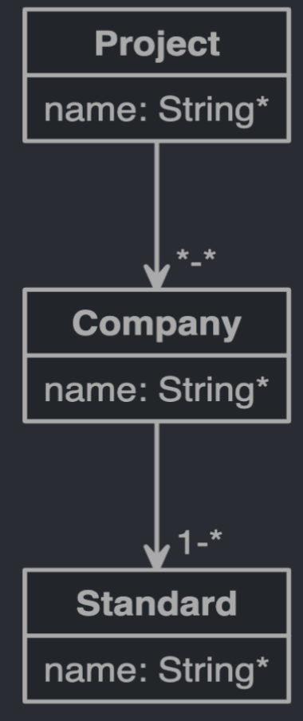
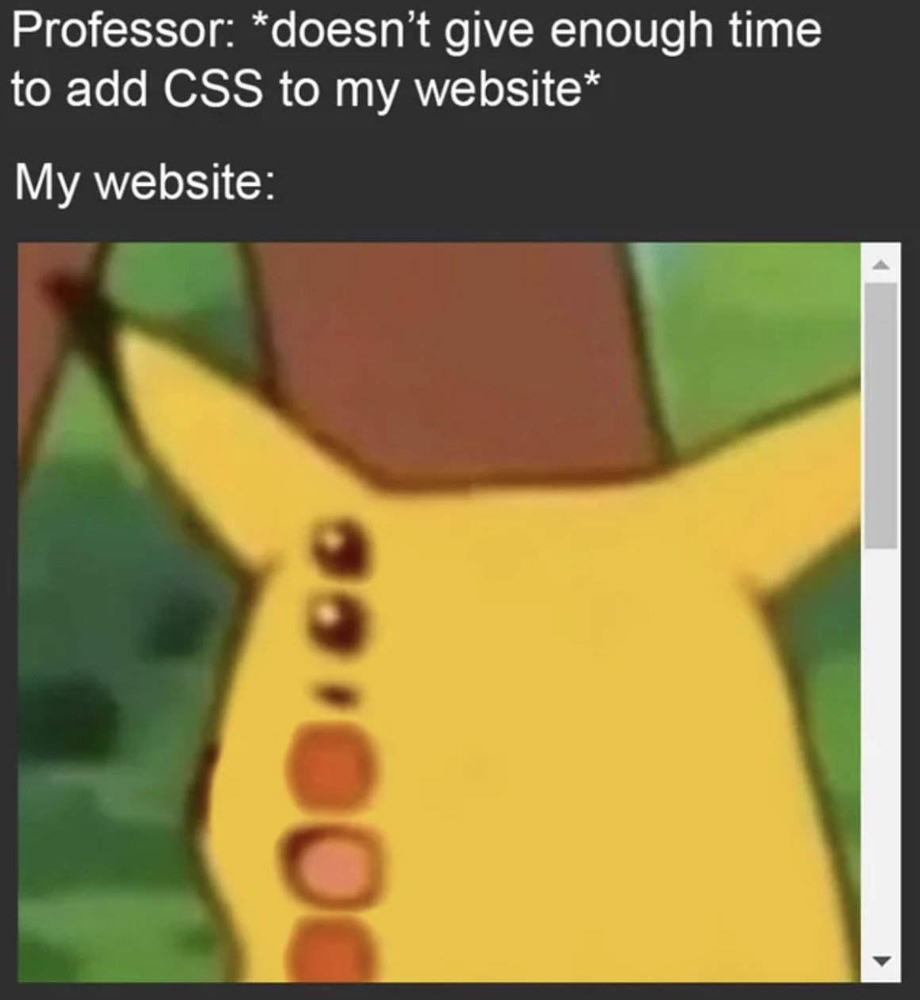
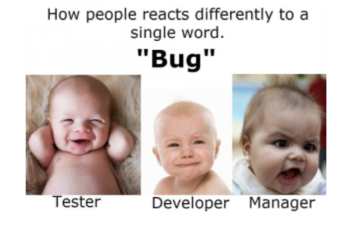
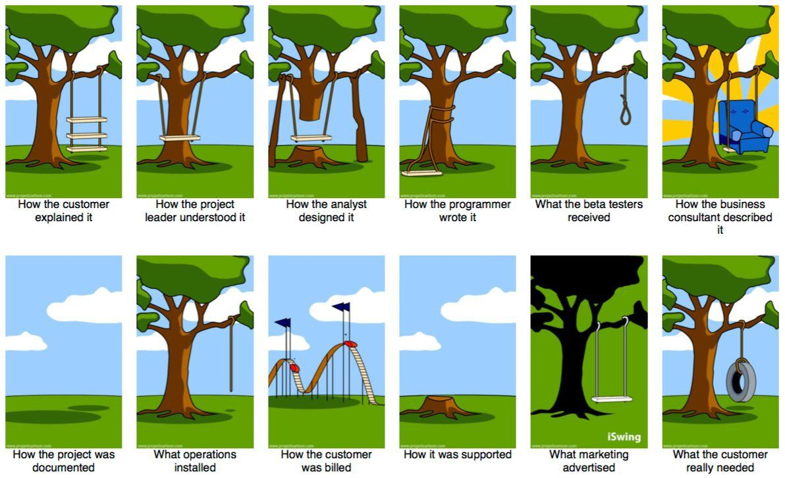
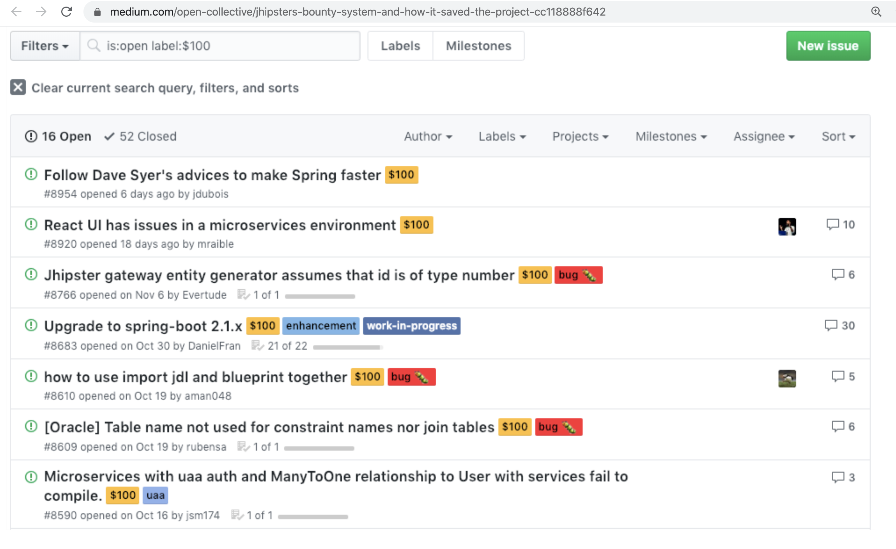
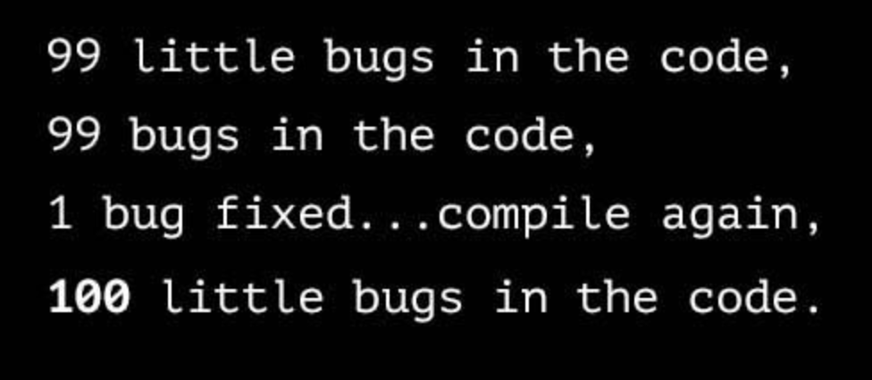
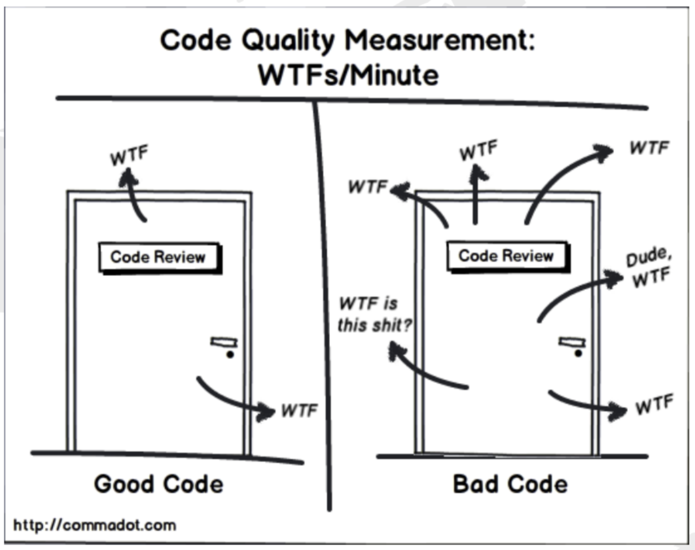
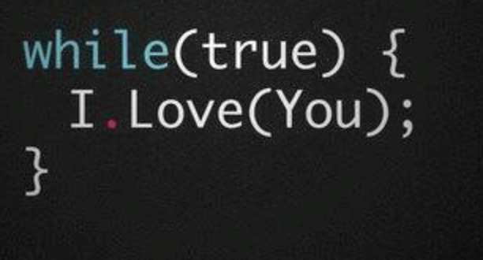
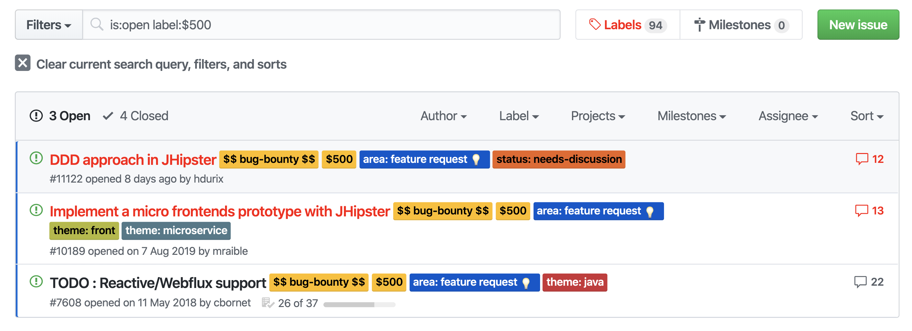
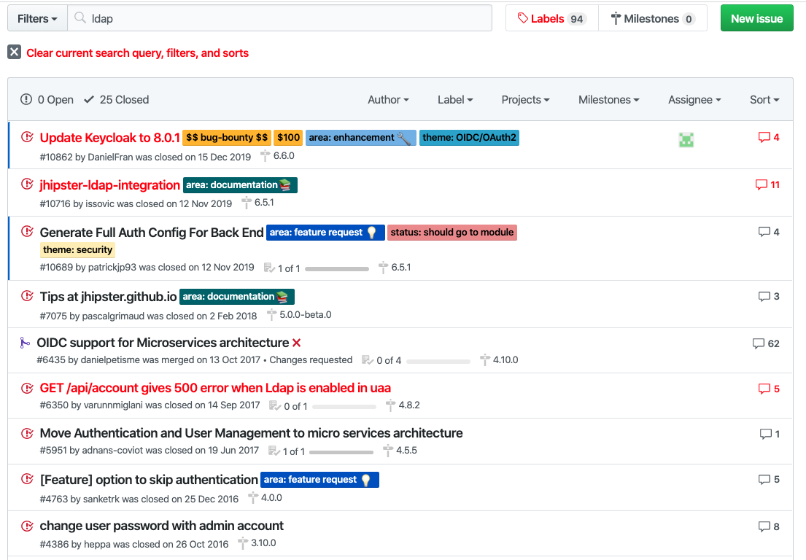

JHipster in action
Yuqiu (Yucho)
Polls
- Frontend, e.g. JS/TS
- Sprint Boot
- Full Stack
- previous experience with JHipster
hand coding vs Code Generators
hand coding is fun
- my own code
- clean code && tdd
Simple project
-

So many ... no time for ...
| Cross | Frontend | Backend | Operations |
|---|---|---|---|
| authentication | Angular Cli | Spring-Initializr | deployment |
| define entity | Unit-, Int-, UI-tests | Unit-, Int-tests | monitoring |
| model entity relationships | Styleguide | Swagger doc | |
| consuming RESTful services | offering RESTful endpoints | ||
| package.json | application.yml | bash scripting | |
| i18n | database layer | ||
| services | services | ||
| security | form validation | ||
| static pages | database version control | docker |
... where my code 🐌 me down
- time is money 
- apply tdd in a wrong way
- bug 
Where Code Generators are great
- simplification
- productivity
- consistency
... where not so much
- good test cases
- domain specific language
- and ...
what if ... There is a code generator that generates crud endpoints, TESTS and MORE!
JHipster
open source Full Stack Generator
- Spring Boot Backend
- SPA Frontend
- Operations
- Code + Unit-, I-, UI-Tests
Project Chronicles
- effort estimation
- architecture
Project Chronicles
- effort estimation
- architecture
- check out JHipster
Marketplace
https://www.jhipster.tech/modules/marketplace/- Angular Material Integration
- generator-jhipster-nav-element
- generator-jhipster-entity-audit
Project Chronicles
- effort estimation
- architecture
- check out JHipster
- generate the whole app
generator-jhipster

{"generator-jhipster": {
"jhipsterVersion": "6.1.2",
"applicationType": "monolith",
"serverPort": "8080",
"authenticationType": "jwt",
"enableHibernateCache": true,
"databaseType": "sql",
"devDatabaseType": "h2Disk",
"prodDatabaseType": "postgresql",
"buildTool": "maven",
"useSass": true,
"clientPackageManager": "npm",
"clientFramework": "angularX",
"testFrameworks": ["cucumber", "gatling", "protractor"], // JUnit, Jest default included
"jhiPrefix": "jhi",
"dtoSuffix": "DTO", // MapStruct
"enableTranslation": true,
"nativeLanguage": "de",
"languages": ["de", "en"]
}}
Project Chronicles
- effort estimation
- architecture
- check out JHipster
- generate the whole app
- generate entity relationships (jdl)
JHipster Domain Language (jdl)


Project Chronicles
- effort estimation
- architecture
- check out JHipster
- generate the whole app
- generate entity relationships (jdl)
- deploy to the cloud
Project Chronicles
- effort estimation
- architecture
- check out JHipster
- generate the whole app
- generate entity relationships (jdl)
- deploy to the cloud
- add business logic
- make UI enhancements
Software being 'Done' is like lawn being 'Mowed'. - Jim Benson
Conclusion
Where JHipster shines
- simplification, productivity, consistency
- production-ready
- RESTful
- latest frameworks: e.g. AngularJs → Angular
- rapid prototyping
The value of a prototype is in the education it gives you, not in the code itself. - Alan Cooper
- differentiates from other generators:
- fullStack
- foundation for TDD: Unit-, I- and UI-Tests
- best practices
Frontend
- Angular
- Component (V)
- Service (C)
- Entity (M)
- Bootstrap
- form validation
- i18n
Backend
- Liquibase ↔ flyway
- Hibernate
- Spring Boot
- @Entity
- @Repository
- @Service
- (DTO with MapStruct)
- @RestController
- Jwt
- Swagger
- lombok
Why JHipster
- makes sense for beginners
- Spring Boot developer → learn SPA
- Angular Developer → React / Vue
- asap feedback from stakeholder
challenges (in general)
- common cliche
common cliche
challenges with jhipster
- experience with Spring Boot
- and at least 1 SPA-Framework
- crud web pages: limited responsiveness on mobile clients
- “Code never lies, comments sometimes do.” - jhipster comments
- jhipster bugs
donation and bounty
bad fix
- learning curve:
- jdl
- timeboxing
- generated architecture
- add code in right places
50-50 chance
Find out on your own
- too much options regarding generation
- if JHipster takes over everything, then where is the fun part?
- issues: JHipster specific vs underlying frameworks
Sometimes it does feel like ...
after you found it

If you ask me
because
Get help from
JHipster GitHub Issue Page (bugs, features)and
StackOverflow (questions)
often
Any ?
- simplification, productivity, consistency
- rapid prototyping
- production-ready
- RESTful
- latest frameworks: e.g. AngularJs → Angular
- fullStack
- foundation for TDD: Unit-, I- and UI-Tests
- best practices
- experience with Spring Boot, at least 1 SPA-Framework
- responsive design
- timeboxing
- learning curve:
- jhipster bugs
- too much options regarding generation
- if JHipster takes over everything, then where is the fun part?
- issues: JHipster specific vs underlying frameworks
yge@it-economics.de